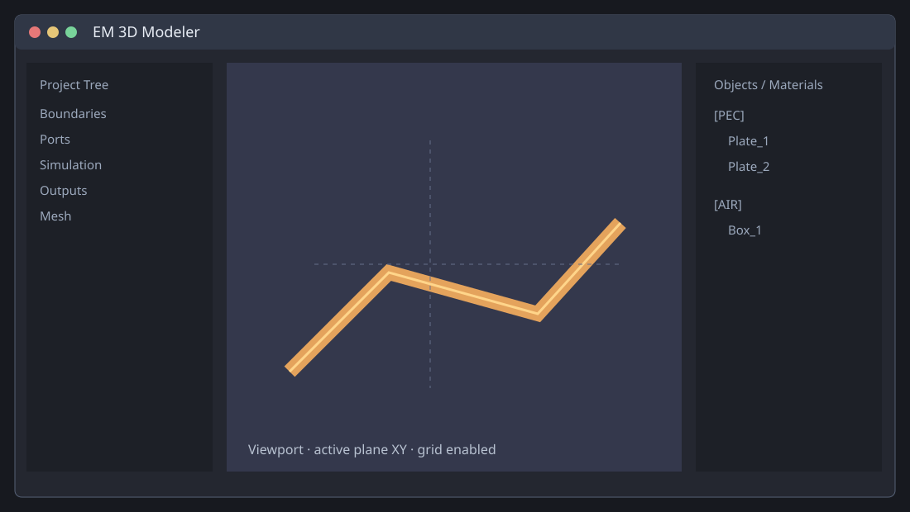
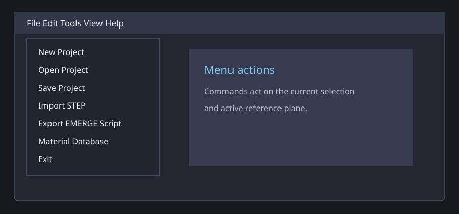
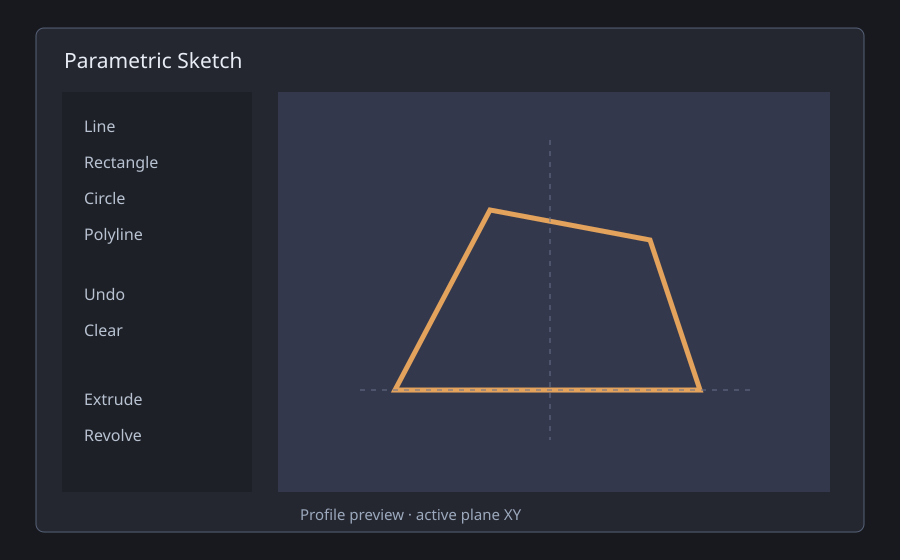
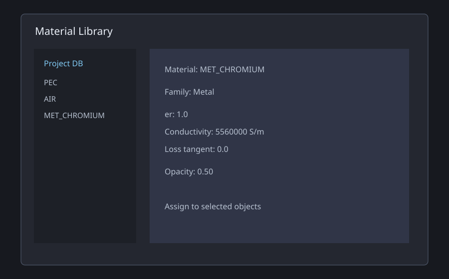
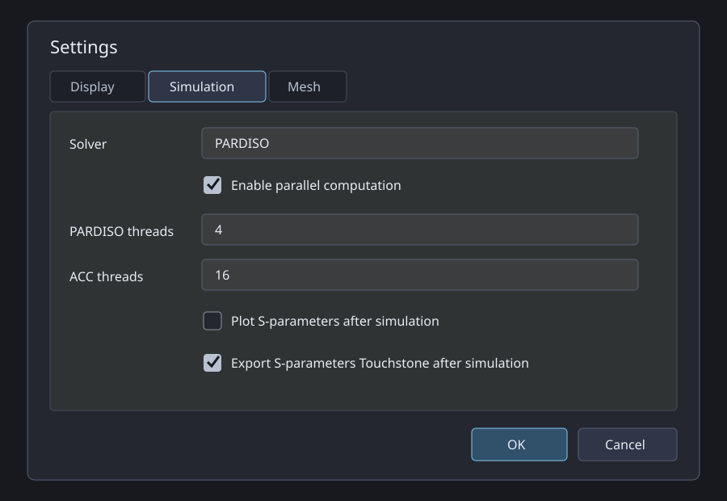
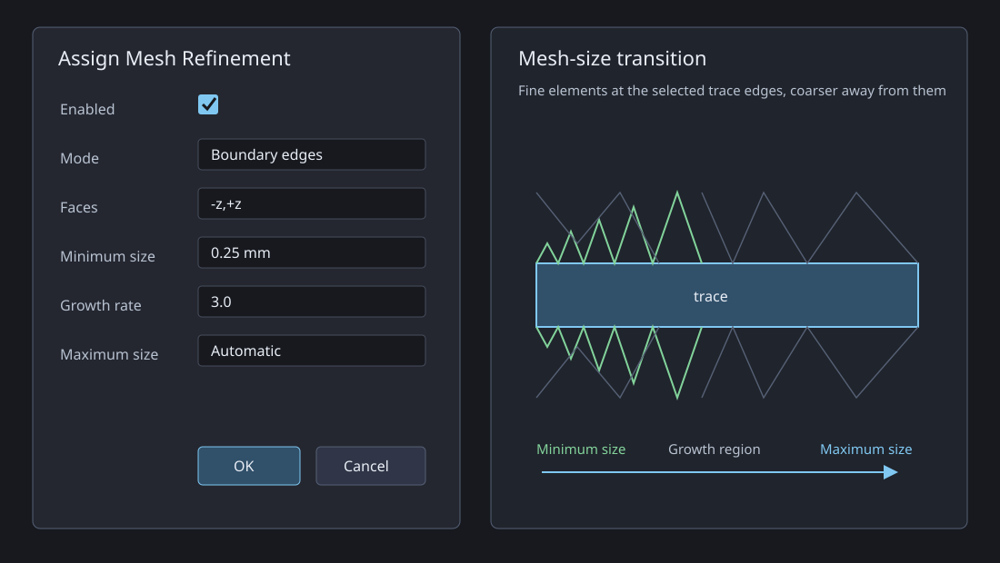
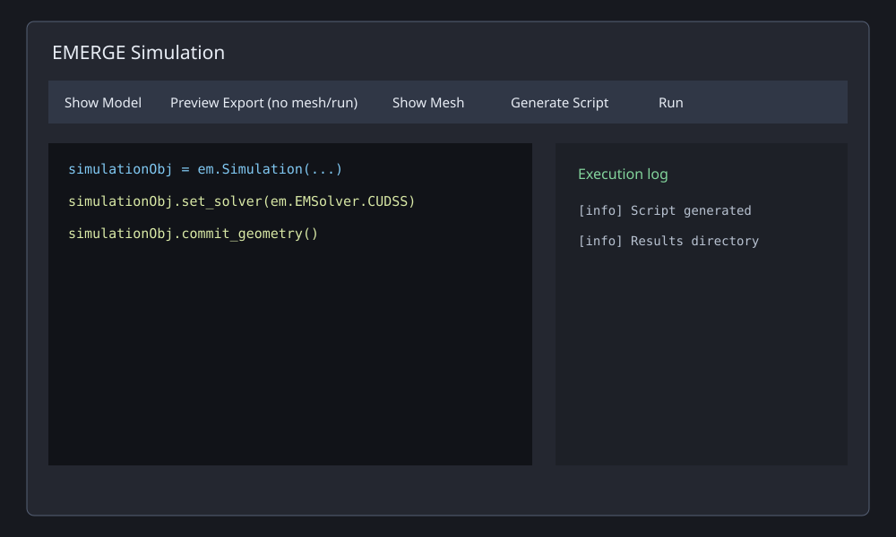
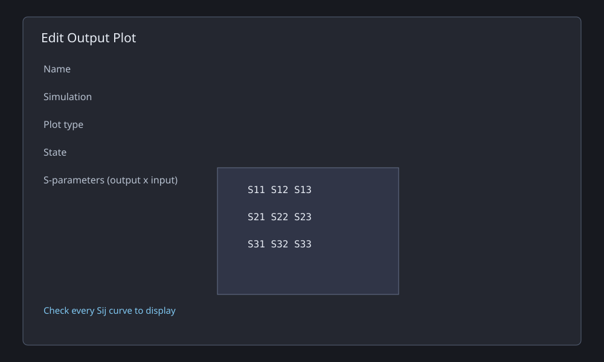

1. Interface and Selection

The Menu bar contains project, edit, view, tools and help commands. The toolbar contains creation, boolean, transform, pattern, STEP, simulation and selection controls. The Project Tree configures EMERGE. The viewport draws and inspects geometry. The Objects / Materials tree controls materials and context actions.
- Click selects one body.
Ctrl+clickadds/removes bodies.Shift+clickselects a tree range.Deletedeletes all selected bodies.- Selection is shared between tree and viewport.
2. Menus

File
- New/Open/Save/Save As: create and persist .em3d projects.
- Import STEP: imports .step/.stp CAD bodies.
- Recent Projects: opens one of five existing files.
- Export EMERGE Script: generates master and child scripts without running.
- Set/Reload Global Material DB: selects or rereads shared materials.
- Exit: closes after save confirmation.
Edit
- Delete Selected: removes all selected bodies.
- Cancel Drawing: cancels active drawing/picking.
- Undo/Redo: manages the last ten scene operations.
View
- Reset Camera/Home: default camera.
- Top/Bottom: XY views.
- Front/Back: XZ views.
- Right/Left: YZ views.
- Isometric: three-quarter view.
- Set/Reset Reference Plane: edits or restores the drawing plane.
- Hide/Show Grid: toggles the grid.
Tools and Help
Tools opens Settings and Material Library. Help opens this guide. About displays author, version and dates.
3. Toolbar
- Box/Plate/Cylinder/Cone/Sphere: create primitives on the active plane.
- Sketch: opens the profile editor.
- Planar: creates a snapped planar structure.
- Cut/Fuse/Common: subtract, union or intersect selected solids.
- Scale: applies a numeric factor.
- Move/Rotate: shared-pivot transform for one or more bodies.
- Pattern: linear/circular independent instances.
- Dissolve Boolean: restores boolean sources.
- Import STEP: imports CAD.
- Play: opens EMERGE Simulation.
- Select combo: All, Surface, Edge or Vertex picking.
4. Object, Material and Sketch Windows
Sketch

Line, Rectangle, Circle and Polyline create profiles. Undo/Clear edit them. Extrude depth creates a solid; Revolve angle and axis create a revolved body.
Materials

Name, family, er, ur, tan d, conductivity, opacity and color define a material. Project/Global source, search, New, Edit, Delete, Append and Reload manage records.
Object properties include Name, Material, Simulation role, Opacity, Color, dimensions and Transform. NON MODEL excludes an object from simulation export.
5. Reference Plane
- Name/Preset: tree label and XY/XZ/YZ orientation.
- Origin/Normal: exact plane definition.
- Pick origin/normal/face: acquire values from geometry.
- Pick 3 points: fit a plane.
- Rotation/Around: in-plane rotation.
- Make Active/View Normal/Delete/Rename: manage plane lifecycle.
6. Settings

Display
Units change dimension input/display. Decimal separation changes parsing. Workspace size controls visible area. Grid size controls spacing. Plane triad size controls the XYZ marker. Selection color controls selected actors.
Simulation
Solver and parallelism
- Solver: selects the backend emitted by
simulationObj.set_solver(...). PARDISO is the usual CPU/MKL direct solver. CUDSS uses an NVIDIA GPU and requires CUDA/cuDSS. SUPERLU, UMFPACK, AASDS and MUMPS require matching support in the installed EMerge environment. - Enable parallel computation: enables the configured thread counts. When disabled, both values are exported as one thread. It does not control frequency-job parallelism.
- PARDISO threads: writes
config.set_pardiso_threads(n)for the MKL-heavy sparse solve. - ACC threads: writes
config.set_acc_threads(n)for the OpenMP-heavy FEM assembly phase. This is a CPU thread count, not a GPU count.
Post-processing
- Plot S-parameters after simulation: opens
plot_spfor the available S matrix after Sweep or Parametric jobs. Disable it for unattended runs. Project Tree output plots remain separate requests. - Export S-parameters Touchstone after simulation: writes all available S-parameters to
.sNp, real/imaginary, with 50-ohm reference. Eigenmode jobs are excluded.
Start with physical CPU cores. Avoid assigning every logical core to both PARDISO and ACC when multiple jobs run concurrently. With CUDSS, ACC threads still control CPU assembly.
Mesh
Resolution (1/lambda) is the wavelength fraction; lower values are finer and slower. Per-object assignments override the default.
Local Mesh Refinement

Open Object / Materials -> right-click -> Assign Mesh Refinement.... Values from Settings -> Mesh -> Local Refinement Defaults initialize the dialog; the values confirmed for each object are stored in the project and used by the generated EMERGE script.
Target and size
- Enabled: exports or temporarily suppresses this assignment.
- Boundary edges: calls
set_boundary_size()on the perimeter curves of the selected faces. This is recommended for trace edges. - Face: calls
set_face_size(). An empty Faces field is allowed for a Plate and refines the complete port Plate. - Faces: comma-separated selectors
-x,+x,-y,+y,-z,+z, relative to the exported object. - Minimum size: finest requested edge length in mm; exported in metres.
Transition
- Growth rate: controls how quickly elements become coarser away from a refined edge. Near 1 gives a longer transition; larger values reach the coarse mesh sooner. Default: 3.
- Maximum size: coarse-size limit. Automatic uses the EMERGE global mesh size. An explicit maximum should normally exceed the minimum size.
Recommended CrossTalk values: traces -z,+z, 0.25 mm, growth 3; port Plates Face, 0.10 mm.
simulationObj.mesher.set_boundary_size(trace.face("-z"), size=0.25e-3, growth_rate=3.0)
simulationObj.mesher.set_face_size(port_plate, size=0.10e-3)Assignments are listed under Project Tree -> Mesh -> Local Refinements. Right-click to Edit, Enable/Disable or Remove; double-click opens Edit.
7. Project Tree: Jobs, Ports and Boundaries

Simulation: Name identifies the job; Type is Sweep, Eigenmode or Parametric; State enables generation; Fmin/Fmax/Fstep define a sweep; Eigenmode count defines modes; Parametric name/CSV values define runs; fitting switch/points define S fitting; Log verbosity controls detail.

Port: Name, Port number, Type, Object, Resistance_Ohm, Voltage_V and Direction_X/Y/Z. Display numbers are preserved; EMERGE IDs are regenerated consecutively 1..N. WaveguidePort also uses Mode, Impedance_Ohm and Excitation. PlaneWave uses Theta_Deg, Phi_Deg and Polarization. Actor world transforms define replicated port coordinates, vectors, dimensions and normals.
Boundaries: PEC, PMC, Open, PML/Layers, Periodic/PairAxis and Radiation/Order.
8. Output Plot Window
Name identifies the output. Simulation selects the result job. Plot type chooses plot_sp, plot_vswr, smith, plot, plot_ff, plot_ff_polar or plot_ff_3d. State enables processing. In the S matrix, rows are output ports and columns input ports: row 2/column 1 is S21. Every checked cell creates one labelled curve. Far-field plane selects XY/XZ/YZ; Polar view selects 2D/3D; frequency is GHz and defaults to the sweep midpoint.
ff3d = field.farfield_3d(boundary_selection) model.display.add_farfield3d(ff3d, component="normE", quantity="abs", dB=True) model.display.show()
9. Patterns
Linear: select one source, enable X/Y/Z, set count including source and step per axis. One axis is a row; two a plane array; three a volume array. Circular: set count and angle, pick center and two different axis points; point2-point1 defines the axis and 360 degrees closes the circle. Copies are independent, persisted and undoable.
10. Group Transforms
Select bodies and choose Move/Rotate or Edit Group Transform. Reference X/Y/Z is the shared pivot; Target X/Y/Z is its destination; Rotate X/Y/Z are Euler degrees. Default pivot is combined bounds center. The same pivot, rotation and translation delta preserves relative assembly spacing. Double-clicking a transform row in the Objects / Materials tree opens the transform editor.
11. EMERGE Simulation Window
- Show Model: committed geometry viewer.
- Preview Export: Gmsh before commit, no mesh/run.
- Show Mesh: view generated mesh.
- Boolean Debug: shifted boolean source inspection.
- Log/Clear Log: filter and clear output.
- Generate/Save/Run/Stop: script lifecycle controls.
- Master/Child tabs: orchestrator and enabled-job scripts.
12. Complete Context-Menu Reference
Material groups
Set Higher/Lower Priority: changes priority for overlapping EMERGE geometry.
Reference planes
Add, Make Active, View Normal, Rename, Delete: manage saved planes.
Ports and boundaries
Edit Assignment: changes parameters. Remove Assignment: removes the association without deleting geometry.
Simulations and outputs
Edit, Enable/Disable, Remove, Add: manage jobs and outputs. Output actions also include Generate Plot and Edit Output.
Mesh
Edit Default Mesh Resolution: changes the global fraction. Remove Mesh Assignment: restores one object to the default. Local Refinements: right-click to Edit, Enable/Disable or Remove; double-click edits.
13. Workflows and Validation
- Create/import geometry.
- Assign materials and MODEL roles.
- Configure ports, boundaries and mesh.
- Configure enabled jobs and output plots.
- Generate and inspect scripts.
- Run and reload results.
- Geometry uses Display units and exports in meters.
- Frequencies are GHz; resistance is ohms; conductivity is S/m.
- Directions are normalized when explicit.
- Mesh is clamped to
0.01..1.0. - Pattern and transform angles are degrees.
- Opacity is
0.05..1.0. - Invalid numeric input keeps the previous value.
For port error [4,8], regenerate: technical IDs must be 1..N. For missing fields, save E/H and rerun. For CUDSS, configure CUDA/cuDSS. For empty far-field, check frequency, fields and integration geometry.
14. Shortcuts and Portable Build
Ctrl+N/O/S New/Open/Save · Ctrl+Z/Y Undo/Redo · Delete selected · Esc cancel · Home camera · Ctrl+1/2/3/4 standard views · Ctrl+click multi-select. The onedir portable folder must include executable, _internal, docs and Icons. Current executable: EM3D_Modeler_1.2.1_Beta.exe.